Приобретение практических навыков взаимодействия пользователя с
системой посредством командной строки.
Задание
Определить полное имя домашнего каталога.
Перейти в каталог /tmp и вывести его содержимое с разными
опциями.
Проверить наличие подкаталога cron в /var/spool.
Вернуться в домашний каталог и определить владельцев файлов.
Создать и удалить каталоги с разными опциями.
Изучить опции команд ls, cd, pwd, mkdir, rmdir, rm через man.
Поработать с историей команд.
Ход выполнения работы
Определение
полного имени домашнего каталога
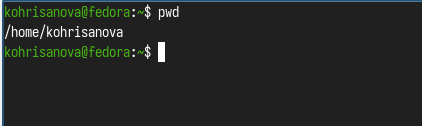
Определение полного имени домашнего
каталога
Переход в каталог
/tmp и просмотр содержимого
1
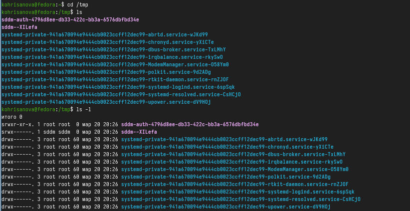
Переход в каталог /tmp и просмотр
содержимого
2
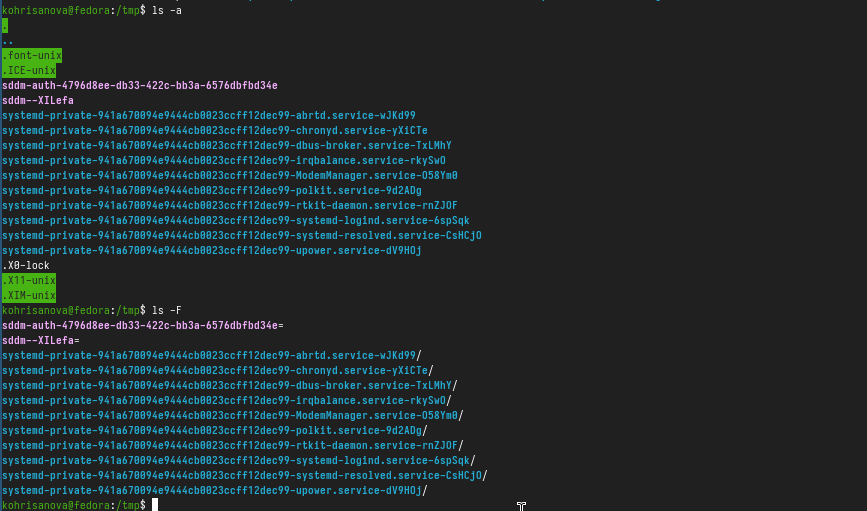
Переход в каталог /tmp и просмотр
содержимого
Поиск подкаталога cron в
/var/spool
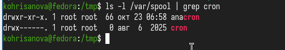
Результат поиска подкаталога
cron
Вывод: подкаталог cron существует в /var/spool.
Возврат в
домашний каталог и определение владельцев
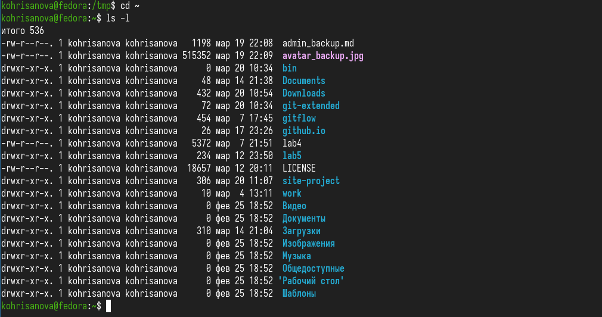
Содержимое домашнего каталога с указанием
владельцев
Вывод: владельцем всех файлов и подкаталогов является пользователь
kohrisanova.
Создание и удаление
каталогов
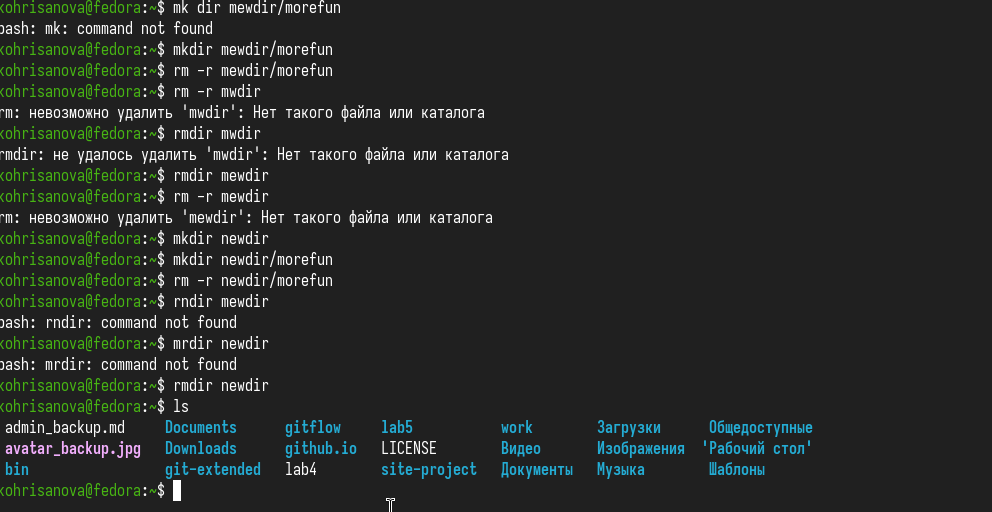
Создание и удаление
каталогов
Изучение опций команды ls
через man
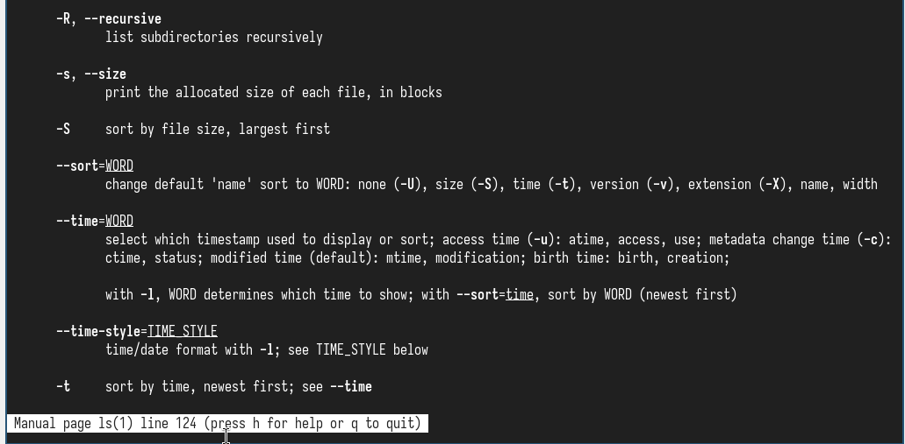
Изучение опций команды ls через
man
Просмотр описания команд
Описание команды cd
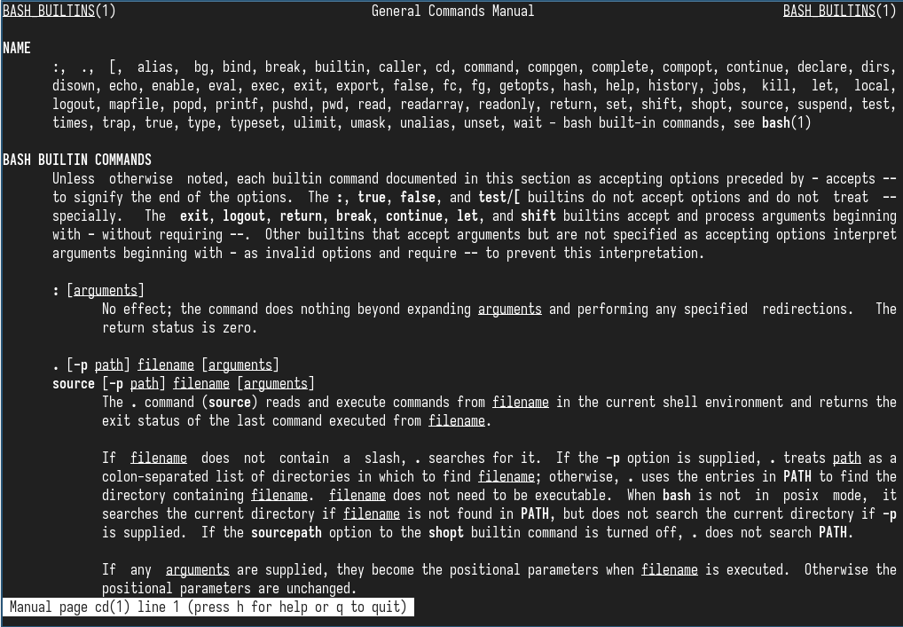
Описание команды cd
Описание команды pwd
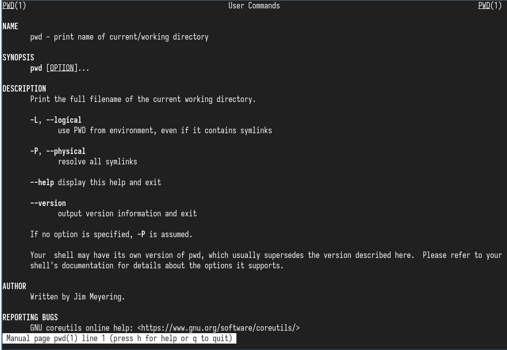
Описание команды pwd
Описание команды mkdir
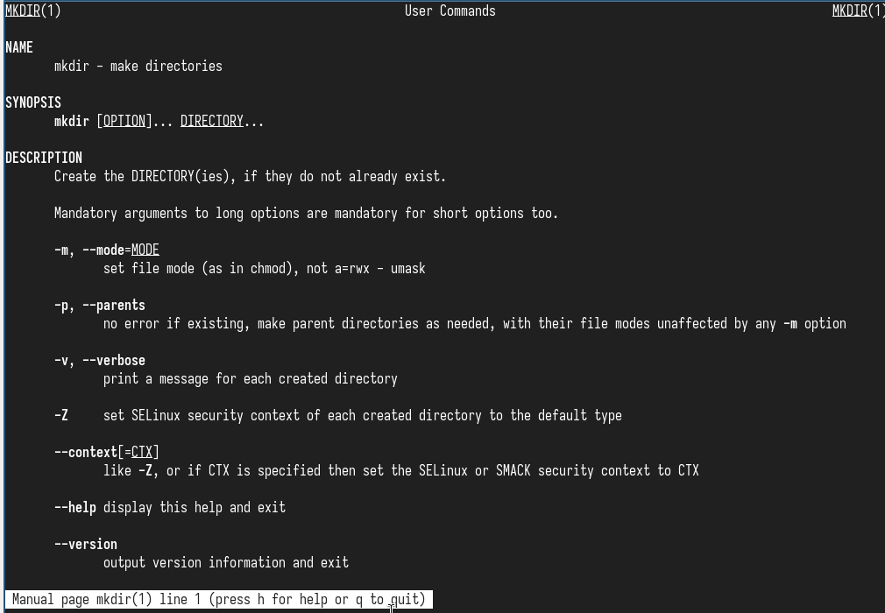
Описание команды mkdir
Описание команды rmdir
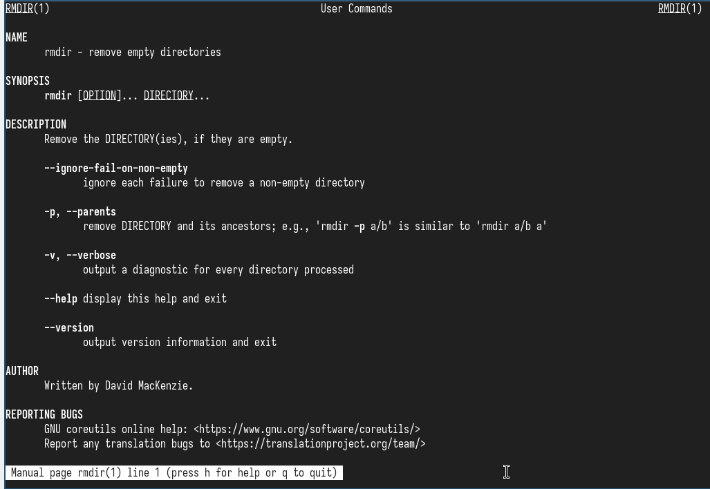
Описание команды rmdir
Описание команды rm
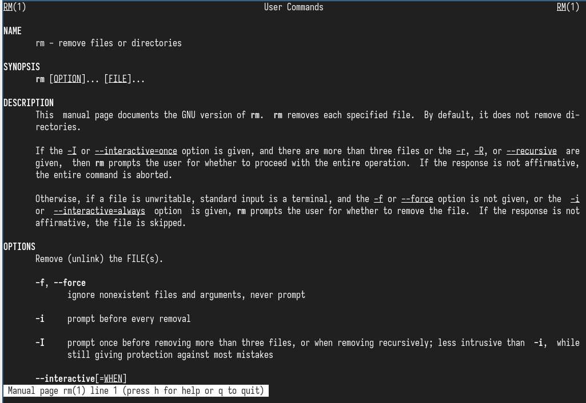
Описание команды rm
Работа с историей команд
Вывод истории команд
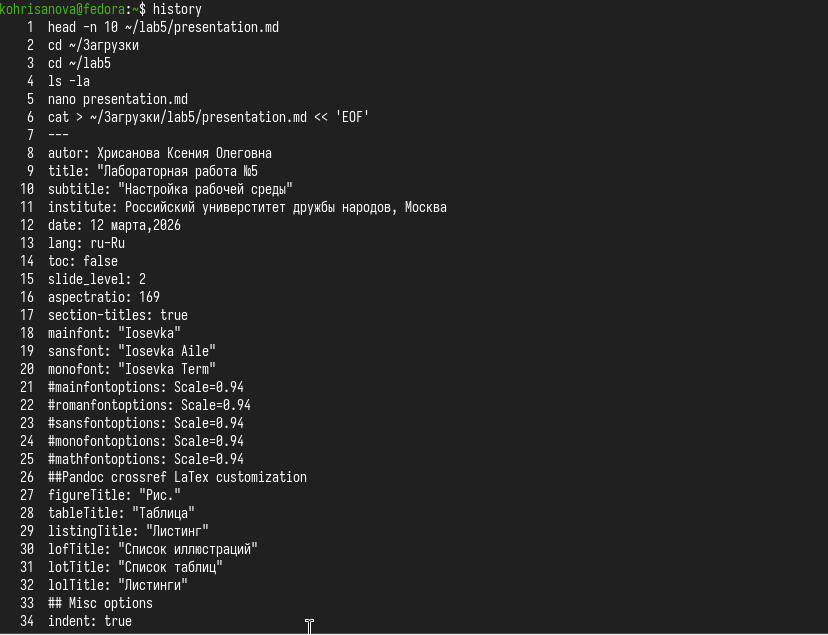
Вывод истории команд
Выполнение команды !4
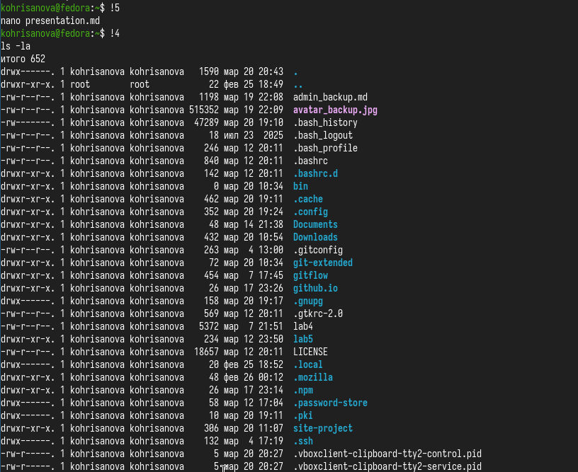
Выполнение команды !4
Модификация и выполнение
команды
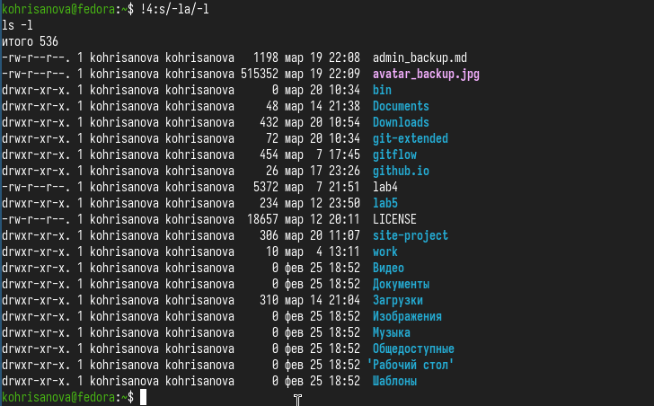
Модификация и выполнение
команды
Выводы
В ходе выполнения лабораторной работы были приобретены навыки:
навигации по файловой системе (cd, pwd)
просмотра содержимого каталогов (ls с опциями)
создания и удаления каталогов (mkdir, rmdir, rm -r)
работы со справочной системой (man)
работы с историей команд (history, !)
Полученные навыки являются основой для дальнейшей работы в командной
среде Unix-подобных систем.